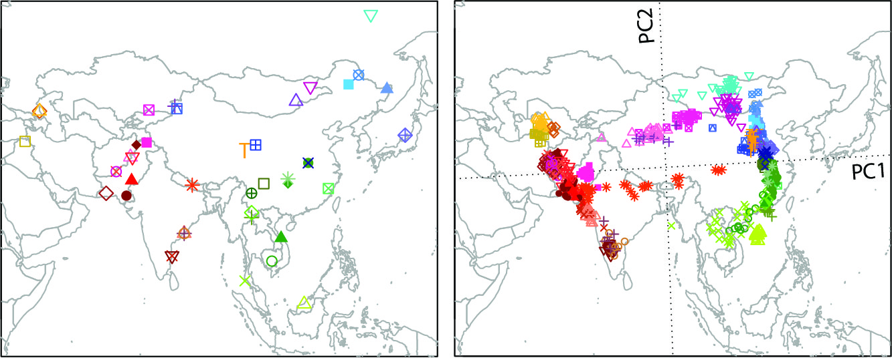

About the lab
Our lab is a bioinformatics lab in the Tongji School of Public Health,
Huazhong University of Science and Technology.
We are located in Wuhan, a metropolitan city in Central China, right next to the Yangtze River (see the picture above).
As a computational group, we collaborate closely with epidemiologists, clinicians, and biologists to study population
genetics and various human genetic diseases. We also develop and distribute novel statistical and
computational methods to address new challenges arise from large-scale human genetics and genomics
data when there is no off-the-shelf tool available.
Our main research areas include:
- Population genetics: We study human population structure, demographic history, and natural selection by analyzing genetic data
collected from diverse human populations. In a recent collaboration with multiple institutes in Singapore, we conducted a large-scale
whole genome seqeuncing study of Singapore Chinese, Malays, and Indians, from which we gained novel insights into the population structure
and evolutionary history of Asian populations.
|  |
Significant similarity between genes and geography was found in Asia based on principal components analysis (PCA) and
Procrustes analysis on SNP genotypes of 43 Asian populations.(Wang et al. 2012, PLoS Genetics)
|
- Statistical genomics: We have developed a series of computational tools to analyze human genetics data based on the principles of
population genetics and statistics. Applications of our tools include estimation of individual ancestry, inference of pairwise genetic relatedness,
genotype calling from shallow sequencing data, and control of population stratification in genetic association studies. We have also participated in
several international consortia on genetic studies of complex diseases.
- Medical genomics: Being part of the School of Public Health in Tongji Medical College, we have access to data and samples of several
large prospective epidemiological cohorts, such as the Dongfeng-Tongji cohort, as well as patients cohorts of a variety of diseases, including
diabetes, cardiovascular diseases, and cancers. We are interested in studying these diseases through integrative genomics approaches,
by combining evidence from multiomics data and from different ethnic populations, with the objective to develop prevention and early diagnosis
strategies for these diseases.